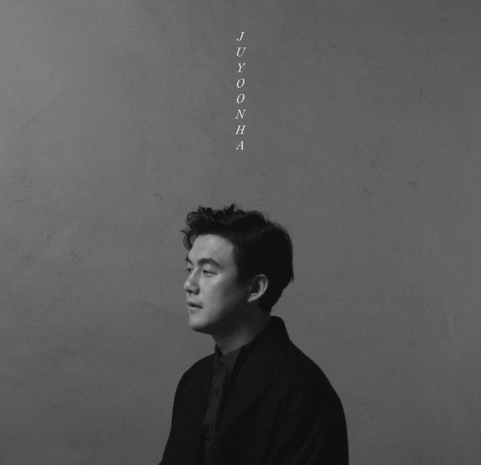

안녕하세요, 라보엠입니다.
자주 듣지는 않지만 어느날 문득 그 노래 뭐였더라 하는 노래들이 있습니다. 오늘은 2016년 발매 이후 오랜 시간 사랑받으며 수많은 마음을 적셔온 주윤하의 대표곡 ‘에필로그’를 소개합니다. 솔로 2집 앨범 [Kind]의 타이틀곡이며, 주윤하 특유의 감성과 레트로적인 작·편곡의 정수가 담긴, 시간이 지나도 변하지 않는 따뜻한 울림을 전하는 노래입니다.

노래의 시작 – 만남과 이별의 경계, 잊음의 시간
‘에필로그’는 사랑과 이별, 그리고 그 사이 잊고자 하는 마음을 다룹니다. 오늘이 지나면 모두 지워버리리 다짐해도, 결국 시간이 우리를 잊어주기 전까지는 쉽사리 지울 수 없는 기억이 있다는 메시지가 잔잔하게 번집니다.“언제부터였을까 우리 서로를 알게 됐던 건, 아 너였구나 내가 만나길 원했던 사람…”처음 만났던 순간부터, 닮은 점이 점점쌓여가던 추억, 깊이 안았던 밤의 온기까지. 첫 소절부터 떠나간 ‘너’를 떠올리게 만드는 가사가 되풀이됩니다.
주윤하가 이 노래에서 가장 강조하는 건, 억지로 누군가를 잊으려 애쓰기보다는 시간의 흐름에 온전히 자신을 맡겨보자는 마음입니다. 사랑이든 꿈이든 스스로의 힘만으로는 지울 수 없는 기억이 있다면, 그걸 그대로 품고 시간이 치유해주길 기다리자는 따뜻한 메시지가 곡 전반에 흐릅니다.
이 곡은 피아노와 현악기의 절묘한 배치, 그리고 주윤하 특유의 부드럽고 담백한 중저음 보컬이 곡의 분위기를 압도합니다. 편안하게 흐르는 듯하지만, 감정선이 한 줄기 여운처럼 촘촘하게 스며들어 있습니다.곡 전체에 아날로그적인 따뜻함, 약간은 빈티지한 사운드 프로세싱, 그리고 세련된 팝 발라드의 구조가 어우러져 레트로와 현대가 이상적으로 조화를 이루고 있습니다. 특히 후반부에서는 현의 울림이 쓸쓸함 대신 잔잔한 위로가 되어, 듣는 이에게 조용한 용기를 건넵니다. 곡의 마지막 부분 “난 못 할 것 같아, 우리 이제 시간이, 기억이 우리를 잊을 때까지 이대로 기다리자”는 담담한 보컬과 함께 오랫동안 가슴 한켠을 울립니다.
가사 속에 담긴 잊음과 용서, 그리고 성장
언제부터였을까
우리 서로를 알게 됐던 건
아 너였구나
내가 만나길 원했던 사람
어쩌면 그렇게도 닮은 게 많은 걸까
깊이 안았던 그날 밤 아직 또렷해
너를 붙잡았던 그 기억들을
나도 이제 다 지우려고 해
그런데 말야 날 보고 웃던
너의 눈빛도 잊을 수 있을까
이젠 괜찮은 걸까
나 없는 너의 하루는
우연히 떠오른 우리 노래가
아프진 않았을까
너를 붙잡았던 그 기억들을
나도 이제 다 지우려고 해
그런데 말야 따듯했었던
너의 목소릴 잊을 수 있을까
나를 지켜줬던 이 기억들을
이젠 모두 잊을 수 있을까
난 못 할 거 같아
우리 이제
시간이 기억이
우리를 잊을 때까지
이대로 기다리자
‘에필로그’의 가사는 스스로의 감정과 마주하고 그것을 수용하려는 성숙한 시선을 드러냅니다.
“나를 지켜줬던 이 기억들을, 이젠 모두 잊을 수 있을까, 난 못 할 것 같아…”
이런 구절들에는 누군가를 사랑했기에 남은 여운과, 그 마음이 언젠가 흐릿해질 수도 있겠지만 조급하지 않겠다는 내면의 다짐이 자연스럽게 녹아 있습니다. 가사 곳곳에는 억지로 기억을 지우려 애쓰지만, 오히려 우연히 듣게 된 우리의 노래 한 구절에 다시 아파지는 순간이 섬세하게 담겨 있습니다.
“나도 이제 다 지우려고 해, 그런데 말야 따뜻했었던 너의 목소릴 잊을 수 있을까.”
이런 반복 속에서 시간이 흘러가고, 언젠가 점점 흐릿해질 추억을 그리워합니다.
맺음말
주윤하의 ‘에필로그’는 각자 마음에 남아 있는 그리움, 그리고 조용하게 흘러가는 시간 속에서 마침내 얻는 용서와 위로를 담아낸 곡입니다. 억지로 잊으려 하지 않아도 괜찮으니, 시간이 자연스레 녹여줄 때까지 그 아픔을 가만히 품고 기다려 보자는 섬세한 메시지가 진한 울림을 남깁니다.오늘처럼 조용한 밤, 또는 무심히 스치는 바람 속에서 ‘에필로그’를 들으며, 당신만의 추억과 감정도 한 번 천천히 들여다보길 바랍니다.